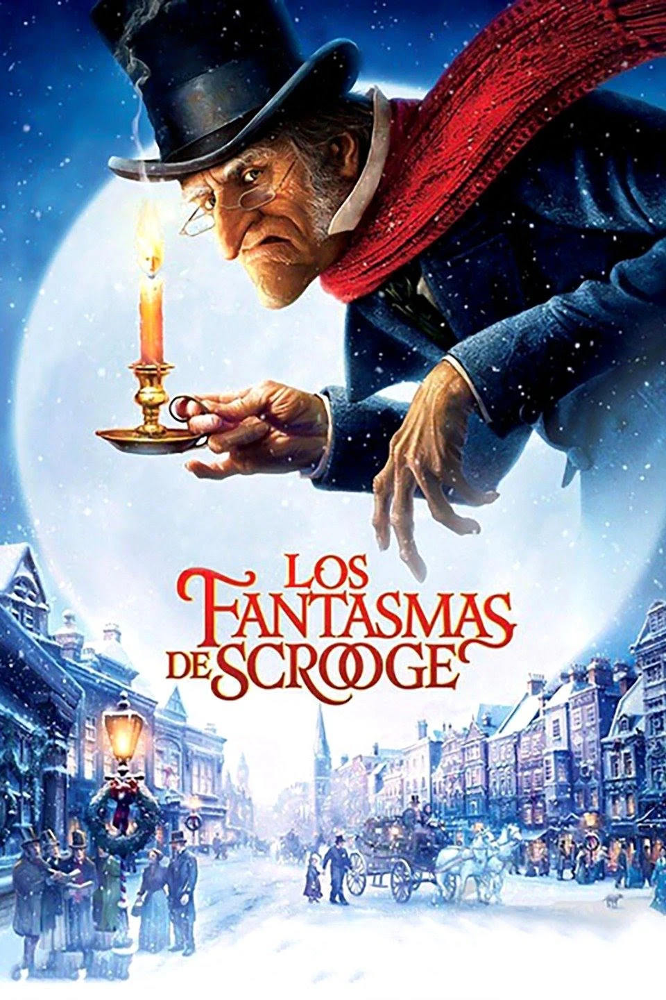

Libros Disponibles

Cuento de Navidad
Autor: Charles Dickens
Género: Navidad
Sinopsis: Ebenezer Scrooge comienza las vacaciones de Navidad con su habitual actitud despreciativa y bruscos modales cuando habla con su fiel empleado Bob Cratchit y con su alegre sobrino. Pero cuando los espíritus de las Navidades pasadas, presentes y futuras lo llevan en un esclarecedor viaje que le revela verdades que él se resiste a ver, el viejo Scrooge finalmente deberá abrir su corazón y compensar años de rencor antes de que sea demasiado tarde
La Ciuadad y los Perros
Autor: Mario Vargas Llosa
Género: Fantasía
Sinopsis: La ciudad y los perros, cuenta a través de la denuncia del machismo y la violencia de un colegio militar de Lima, una crítica a la sociedad peruana. Narra la brutalidad encarecida ejercida en un grupo de jóvenes alumnos de un colegio militar en Lima.

Cien Años de Soledad
Autor: Grabiel Garcia Marquez
Género: Realismo Mágico
Sinopsis: Entre la boda de José Arcadio Buendía con Amelia Iguarán hasta la maldición de Aureliano Babilonia transcurre todo un siglo. Cien años de soledad para una estirpe única, fantástica, capaz de fundar una ciudad tan especial como Macondo y de engendrar niños con cola de cerdo.